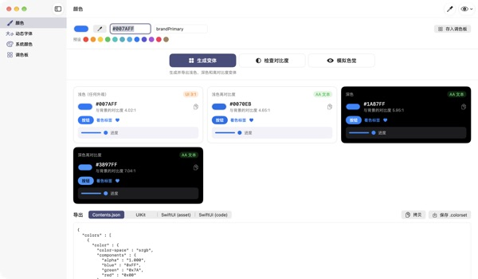
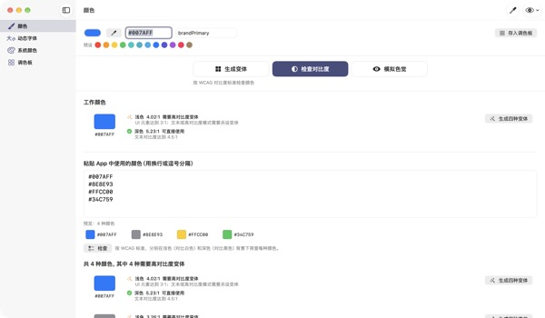
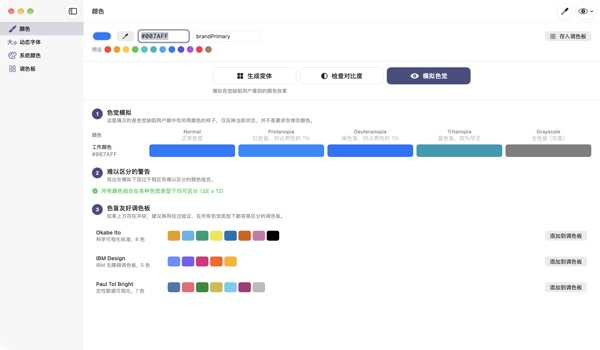
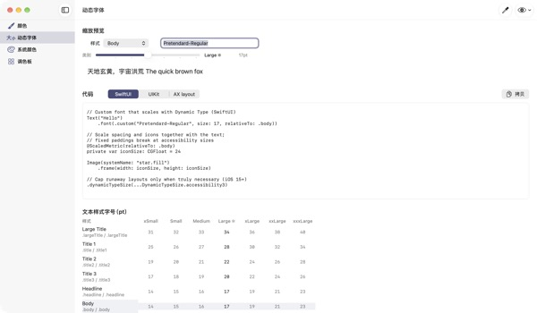

输入一个颜色
得到四种外观
系统颜色会随深色模式和“增强对比度”自动变化，品牌色却不会。TetraTint 从一个浅色模式颜色出发，生成浅色、浅色高对比度、深色、深色高对比度四种变体，并直接导出到 Xcode。
所有功能免费。需要 macOS 14 或更高版本。

试试你的品牌色
粘贴一个 hex 值，或点一个预设。用和 App 相同的算法，四种变体和背景对比度立刻出来。
品牌色在深色模式下被吞掉过吗？
在浅色模式下挑好的蓝色，放到黑色背景上就发灰；对开启了“增强对比度”的用户来说，文字也很难看清。为每种外观手动找颜色、逐个算对比度，半天就过去了。TetraTint 按照系统颜色在不同外观间变化的方式生成变体，并当场告诉你每一种是否达标。
一次检查所有在用的颜色
把 App 里用到的 hex 列表整段粘贴进来，它会逐个判断：可直接使用、需要高对比度变体，还是仅限装饰用途。
有问题的颜色点一下就能生成四种变体并存进调色板。准备 App Store 无障碍标签中的“足够的对比度”时也能直接用。

用色觉障碍者的眼睛去看
模拟调色板在红色盲、绿色盲、蓝色盲和灰度下的样子，并对变得难以区分的颜色组合发出警告。
一键导入 Okabe–Ito、IBM、Paul Tol 色盲友好调色板；也可以点右上角的眼睛按钮，用这种视角预览整个 App 界面。

自定字体也能跟随文字大小
查看 11 种文本样式在 7 个尺寸档位下的对照表，拖动滑块即可预览实际大小。
输入字体的 PostScript 名称，就能生成 UIKit、SwiftUI、@ScaledMetric 代码，以及在大字号下切换布局的代码。

三步开始
- 1
输入基准色
粘贴 hex，用吸管在屏幕任意位置取色，或选一个预设。
- 2
检查四种变体
看徽章了解对比度，与品牌调性不符的变体用拾色器调整。
- 3
导出到 Xcode
以 Contents.json、.colorset、UIKit 或 SwiftUI 代码复制或保存。
变体的生成规则和徽章含义
- 浅色（任何外观）
- 保持你输入的颜色
- 浅色高对比度
- 略微提高饱和度，再调暗到在白色背景上达到 4.5:1
- 深色
- 稍微更亮、更鲜艳（亮度 +5，饱和度 +3）
- 深色高对比度
- 调亮到在黑色背景上达到 7:1
- AA 文本
- 与背景对比度不低于 4.5:1，可用于正文
- UI 3:1
- 不低于 3:1，可用于按钮和图标，但不够用于文字
- 偏低
- 低于 3:1，不要用于文字、图标或状态提示
- 导出
- Contents.json · .colorset · UIKit · SwiftUI，整个调色板可导出为一个 .xcassets
系统颜色参考值依据 Apple 人机界面指南，可能随系统更新而变化。正式的 App 中请使用系统颜色 API。
常见问题
真的免费吗？
是的。所有功能免费，无需账号，也没有广告。觉得有用的话，可以在设置里打赏，打赏不会解锁任何功能。
自动生成的变体和品牌调性不符。
可以用每张变体卡片上的拾色器逐个调整。点“全部重新生成”会丢弃手动修改，从基准色重新生成。
变体是按什么规则生成的？
依照 Apple 系统颜色在不同外观之间的真实变化规律：深色下稍微更亮更鲜艳，浅色高对比度在白色背景上超过 4.5:1，深色高对比度在黑色背景上超过 7:1。
色觉模拟里的警告是什么意思？
表示在这种色觉下，两种颜色的差异（ΔE）低于 12，变得难以区分。不要只靠颜色区分状态，请配合图标、图案或文字标签，或换用色盲友好调色板。
怎样让自定字体支持动态字体？
在“动态字体”页面输入字体的 PostScript 名称并选择样式，就会生成 UIKit、SwiftUI 和 @ScaledMetric 代码。在辅助功能字号下，正文会超过默认大小的三倍，请避免固定高度和 lineLimit(1)。
导出的颜色在 App 里看起来和系统颜色不一样。
系统颜色参考值依据人机界面指南文档，可能随系统版本而变。系统颜色请始终通过 UIColor 或 Color API 使用。
保存的调色板存在哪里？
只保存在你的 Mac 上，不会同步到云端，也不会发送出去。详情请参阅隐私政策。
用吸管取的颜色会被保存吗？
不会。它只读取所指位置的颜色值作为当前颜色，不会保存或发送屏幕图像。
支持哪些 Mac？
需要 macOS 14（Sonoma）或更高版本。导出时由你选择文件保存位置。
问题反馈、功能建议或使用疑问，请发邮件到 leeo@kakao.com。通常会在 2–3 天内回复。